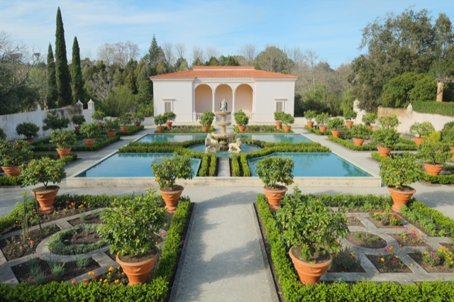
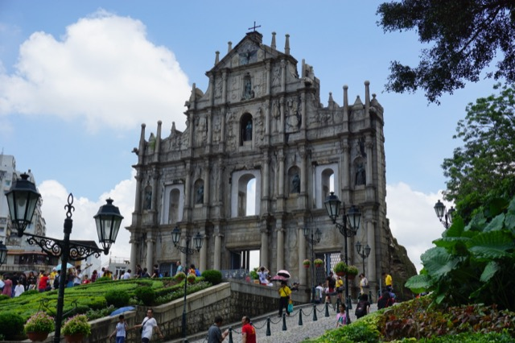
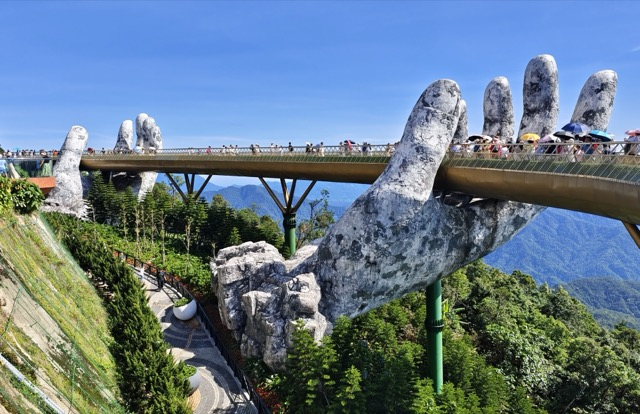

1. 뉴질랜드 (해밀턴)
📅 2024. 06
뉴질랜드 북섬에 위치한 해밀턴(Hamilton)은 아름다운 해밀턴 가든과 해밀턴 호수가 유명한 평화롭고 정원이 아름다운 도시입니다.

배경음악 듣기
📅 2024. 06
뉴질랜드 북섬에 위치한 해밀턴(Hamilton)은 아름다운 해밀턴 가든과 해밀턴 호수가 유명한 평화롭고 정원이 아름다운 도시입니다.

📅 2024. 12
홍콩의 빅토리아 피크(Victoria Peak)는 홍콩 섬에서 가장 높은 산으로, 홍콩의 도심 빌딩 숲과 화려한 야경을 한눈에 내려다볼 수 있는 최고의 전망 명소입니다.
📅 2025. 12
동양과 서양의 문화가 융합된 마카오(Macau)는 세계문화유산인 성 바오로 성당 유적과 세나도 광장, 그리고 화려한 야간 카지노 리조트 거리로 유명합니다.

📅 2025. 12
베트남 중부의 대표적인 휴양 도시 다낭(Da Nang)은 끝없이 펼쳐진 미케 비치와 바나힐 골든 브릿지(손 모양 다리), 그리고 저렴하고 맛있는 베트남 로컬 음식이 매력적인 곳입니다.
